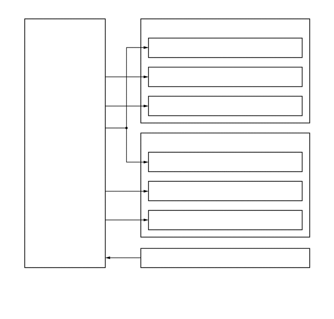

0.708,3.073 2.167,3.302
1.458,0.229
10
false
- 后视镜控制 ECU*
3.083,0.448 5.51,0.667
2.427,0.219
10
false
左侧车外后视镜总成
3.281,0.854 6.24,1.083
2.958,0.229
10
false
车门后视镜伸缩/回位马达
3.281,1.49 6.479,1.792
3.198,0.302
10
false
车门后视镜镜面垂直调节马达
3.281,2.104 6.49,2.417
3.208,0.313
10
false
车门后视镜镜面水平调节马达
3.083,2.896 5.708,3.146
2.625,0.25
10
false
右侧车外后视镜总成
3.292,3.313 6.281,3.5
2.99,0.188
10
false
车门后视镜伸缩/回位马达
3.292,3.938 6.344,4.219
3.052,0.281
10
false
车门后视镜镜面垂直调节马达
3.292,4.563 6.427,4.823
3.135,0.26
10
false
车门后视镜镜面水平调节马达
3.083,5.385 5.594,5.625
2.51,0.24
10
false
左前车门门锁总成*
0.167,6.333 3.344,6.604
3.177,0.271
10
false
*：带自动伸缩功能的车型
0.667,2.375 1.875,2.75
1.208,0.375
10
false
车外后视镜开关总成